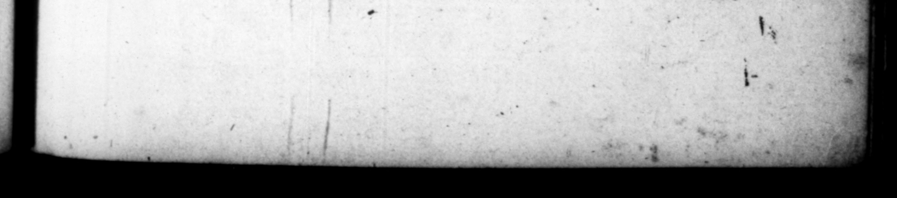

% 4 * by * — | T2 % — TIB. L AUD IU CASAR, 267 9 1 Jo it, ſaid, that be wild have bi woe 2 , e, e ton ter fr bees N. eos = e | | 8 1 — — ͤͥ;—! ͤ 2ͥ nn. ̃² !U — 35. Uxores prater am duas poſtea dukit, Poppxam Sabinam, queſtorio pane natam, & equiti Romano inde Statiliſulis ac triumphalis abneptem. ut potiretur, virum ejus Oo rn! Veſtinom COS, tn honore ipſo trucids vit. Octavie conſuetudinem Cito aſpernatns, corripientibus arfiicis, ſuſficere illi * reſpondit, uroria ornaments. Eandem mox ſæpe fruſtra ſtrangulare meditatus, dimiſit ut ſterilem: ſed improbante di vort ium populo, nec parcente convitiis, et iam relegavit, Denique cmi ſub crimine adulteriorum, adeo impudenti fal de, * And at laſt put ber to deat pus ſoq at's - 2 hy in queſtione pernegantibus cunctis, Anicetum pedagogum ſuum indicem fubjecerit, qui dolo ſtupratam a ſe fareretur, Poppzam duodecimo die poſt divortium Octaviæ in matrimonium acceptam di lexit unice. Et tamen ipſam oh ys ictu calcis occidir ; quod ſe. ex aurizatione ſero reverſiun, gravida & gra convitiis inceſſea rat. Ex hac filiam tulit Claudiam Autguſtam, amiſitque admodum infantem. Nullum adeo neceſſitudin is genus” eft 2 non ſcelere perculerit. . 9 iam recuantem Poppe mortem nuptias Naas, quaſi molitricem noyaram rerum, interemit, Similiter interemit cteros, aut affinitate aliqua ſihi aut propinq uitate conjuncos. In quibus Aulum Plautium juvenem: quem cam ante mortem per vim Conſtu. Eat uuns, inquit, mater mea, & ſuceſſorem te. um oſculetur : Jaftans dilectum ab eo, & ad Tpem imperii | praſſet, weary of Ocla r bed, and being | feſs that be h upon her to ſubmit to his child and a age becauſe ſhe took "There was i Faged in 4 you, Aulus Fla utius. He | 3 to ſubmit to his unnatural lui A He had two be es 0ftevia, A Foppe Sabina thedaughter of '« Gentle» man, that had been queſter, whohat married be fore tu 4 Roman — 2 h ante nuptam : 8 an 4 cercher;; (Shaeth; 6 hb am Meffalinam Tauri bis con. N big: fſſalina'gr 2 fo Tauru bo Wis twice conſul, and had the honour of '# triumph 3 in order ta "enjoy wbem, be Put to death ber busband Attics 'e mes, at that time conſul. He was Coe ſured by his friends for it, be replield paige Marr node 9-4 Soon empreſs ought to ſuffice Her. After be attempted ſeveral times, but l vain, to ftrangle her, and then di vote her as being barren. Bu the people ex» preſſing their diſlike of ut, and gong ther tongues 4 great deal ef tit up the occaſion, he 'baniſhed her too. upon 's ſo very impudent of and apparently falſe, that when "all that were gxamine4 by torture about it abſolutely denied their knowledge © of any ſuch thing of her, he was forced to gue Amcens to conrevailed He worn his pe by 4 trick its married Poppea twelve days after the di vorce of Oftavia, and loved her en. tire, and yer killed her with & Mike he La ve ber, when ſhe was big "with the liberty to ch ide him fer coming lite home from his exerciſe of driving "the thatiot. He had by ber 4 daufhier Claudia "ap <6 69 ry die d an infant. 4 no kind of relations that did not feel the effects of his cri ty to their deſru tion. | He put to death Antonia (Claudius hter, who refuſed to marry him after the death of Poppea, under — her being en| 4g) bim. IA like manner did he de all the reſt that — ways allied to —— by blood or marriage, among i am . 7 70% bl then ordered him 4% be ex
